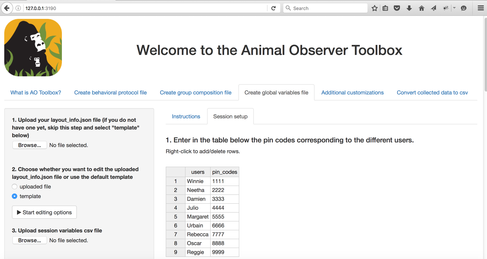

How to Customize Animal Observer and convert collected data to CSV
We created an application named Animal Observer Toolbox to allow you to generate the three JSON files needed to customize your user interface and convert Animal Observer output file to CSV. Although you do not need to have any prior knowledge of the R language to run AO Toolbox, you will need a recent version of the software R to be able to run this application. R can be downloaded here. Make sure R is installed on every computer you will use to set up Animal Observer and to download collected data. You will also need package 'shiny' to be installed. To do so, just open R and type install.packages('shiny') in the R console.
You will need an internet connection the first time you run the toolbox because R will run install in the background a few packages ('rjson', 'visNetwork', 'rhandsontable', 'markdown', 'RPostgreSQL'). To launch it, just type:
library(shiny)
runGitHub("FosseyFund/AOToolBox-public")
The necessary packages will then automatically be downloaded and the toolbox will start in your default internet browser. Follow the instructions in the different tabs to set up your user interface and convert the data you've collected to a set of csv files. If you use RStudio to open AO Toolbox, make sure you click 'Open in Browser' in the RStudio html window.
Once you have launched the Toolbox using the above command once, you can run it even without an internet access using the following procedure:
- Download the whole repository using the links at the top of the page. Unzip it and rename the folder to something simple like 'AOToolBox-master'.
- Make sure R's working directory includes the 'AOToolBox-master' folder (in MAC, go to Misc/Change Working Directory).
- Launch AO Toolbox from R by typing in the R console:
library(shiny)
runApp('AOToolBox-master')
Have fun!